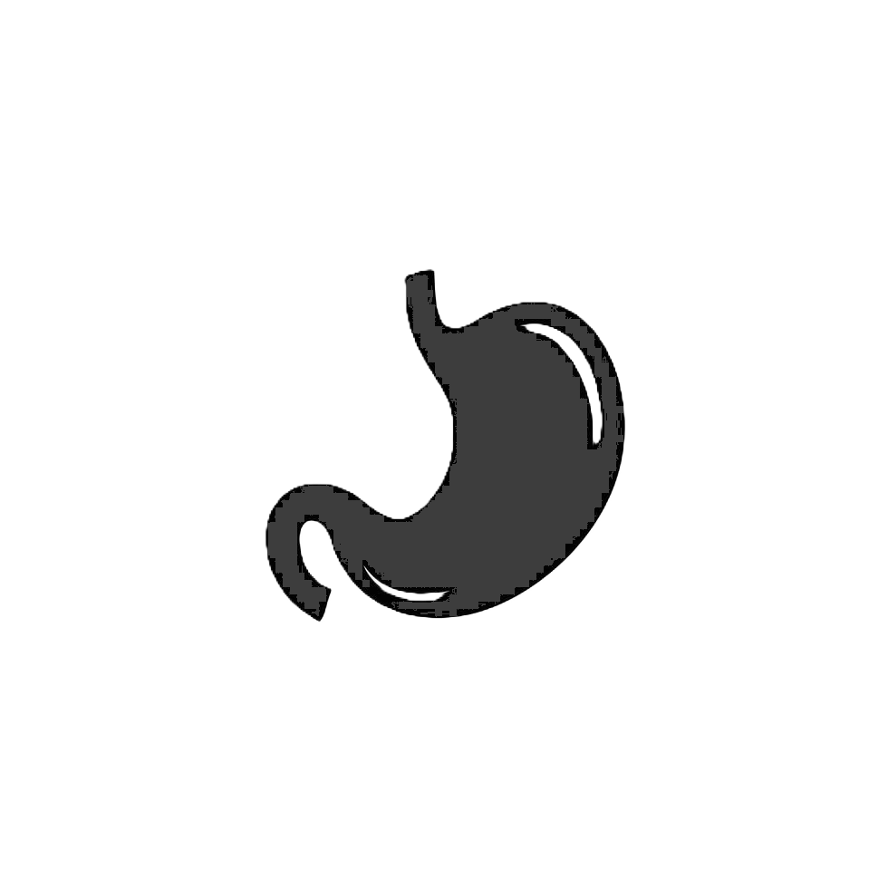

Understanding Your Health Journey
1
Record Your Symptoms
Start by documenting your symptoms carefully. Note:
- When symptoms started
- Severity and frequency
- What makes them better or worse
- Any related symptoms
2
Get Your Initial Assessment
Our AI-powered system will analyze your symptoms and provide:
- Possible conditions
- Risk level assessment
- Recommended next steps
3
Professional Medical Advice
Based on your assessment:
- Share results with healthcare provider
- Schedule appropriate consultations
- Get personalized treatment plan
Common Symptoms Guide
Respiratory
Cough, shortness of breath, chest congestion
Self-Care Tips:
- Use a humidifier
- Stay hydrated
- Rest in an elevated position
Head & Neck
Headache, sore throat, neck pain
Self-Care Tips:
- Apply cold/hot compress
- Practice gentle stretches
- Maintain good posture

Digestive
Nausea, stomach pain, digestion issues
Self-Care Tips:
- Eat bland foods
- Stay hydrated
- Avoid trigger foods